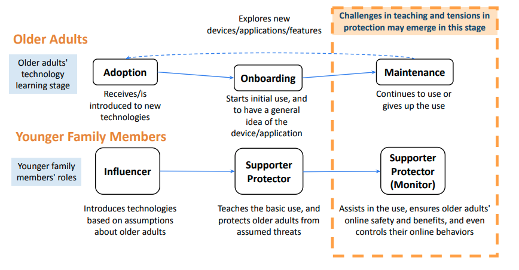
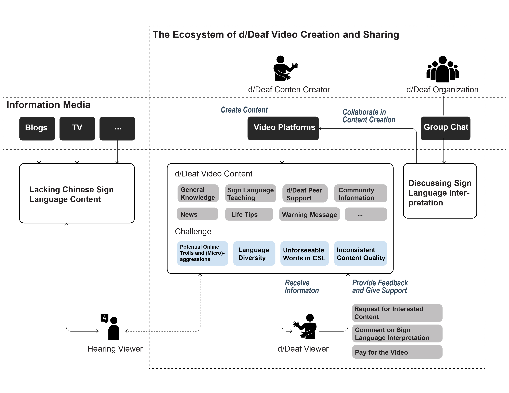
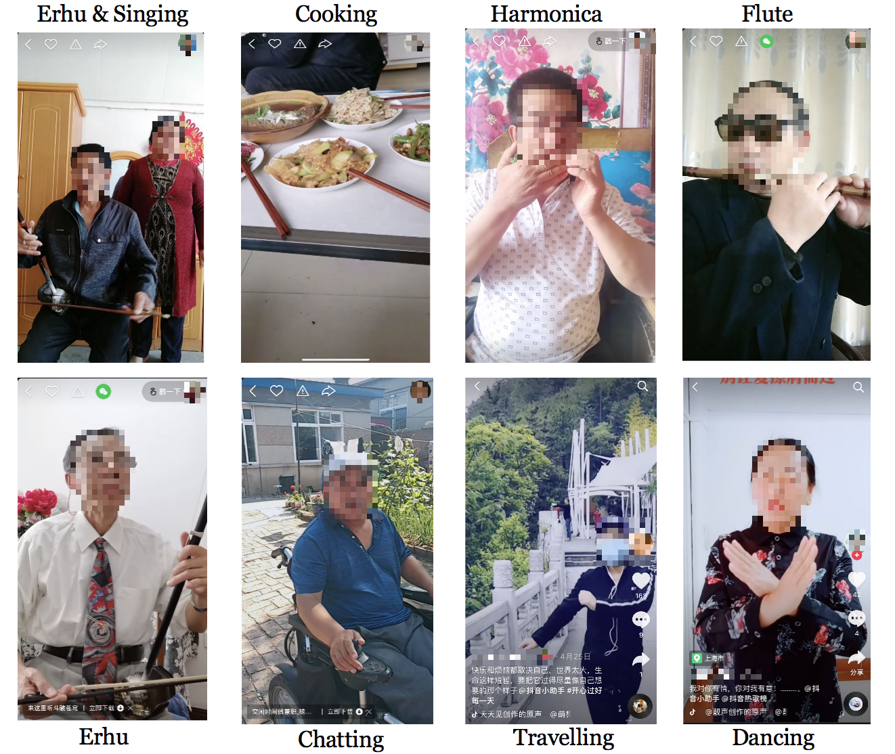
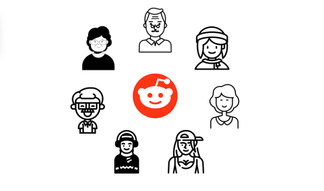
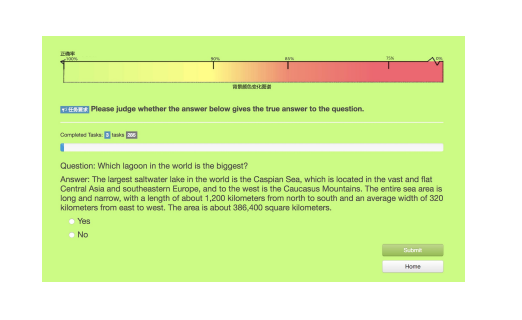

2nd year M.S. Student at UCI
Pronoun: She/Her
Contact: xinrut1@uci.edu
1. Family Support to Older Adults' Tech Learning (Lead)
2. Online Sign Language Content Generation Powered by d/Deaf Communities (Lead)
3.1 Older Adult Content Creators on Short Video Platforms (Lead)
3.2 A Case of an Age-integrated Online Community (Assistant)
My research is often motivated by my observation of people’s everyday life and existing practices. I particularly enjoy finding design opportunities from people’s lived experiences and iterating my thoughts through the research process. Below are my past research projects.
Motivation: Intuitively, younger family members are one of the major support sources for older adults’ technology learning. However, I noticed that there seem to be many challenges and tensions in the support process (e.g., many younger people do not support their older family members to use SVPs because they think older adults are vulnerable to online misinformation). To uncover the opportunities and challenges in family collaboration, I dived into the family dynamics during older adults' technology learning based on interviews with both older and younger adults.
Results: The work uncovered a typical family support pattern (see the Figure below), which highlights the challenges and tensions in family support that received little attention before:
Method: Interviews with 20 older adults and 18 younger adults, including 9 families
Role: Lead Author
Publication: CSCW2022
Motivation: The project was motivated by the most reported challenges from the d/Deaf people I have connected with, i.e., sign language information access
(check out d/Deaf people in China for more details).
Due to the lack of official sign language information, many of my participants enjoy watching sign language videos created by and for d/Deaf people
(I termed them as d/Deaf videos) for informational (e.g., COVID-19 information)
and/or educational purposes (e.g., basic legal knowledge).
Seeing the potential and importance of d/Deaf videos to d/Deaf people's information access,
I dived into the creation and sharing of these videos, showing how d/Deaf people collaborated online to power community-driven information accessibility.
Results: We outlined an eco-system of d/Deaf people's collaborative content generation and sharing on Chinese video sharing platforms (see the Figure below). The eco-system shows the potential of video sharing platforms to support d/Deaf community-driven information accessibility.

Method: Interviews with 12 d/Deaf people, Content Analysis of 360 d/Deaf videos
Role: Lead Author
Status: Under Review (I only share the general findings of the project here. The
sharing is upon the permission of my collaborators.)
Note: 1) I involved a Deaf professional in our research team out of my desire to have d/Deaf communities' own "voice" heard. 2) I will continue this project, extending the findings
into my Master's thesis.
Motivation: SVPs (e.g., Douyin, the Chinese version of TikTok) have a strong user base among older adults, including those living in less developed areas (see the Figure below). The popularity of SVPs caught my attention because older adults often seem to be online lurkers. Therefore, the case of SVPs may provide insights for supporting older adults' online participation. To understand how and why they are active on these platforms, I interviewed with 13 older adult content creators to understand their motivations and practices on these platforms.


Background: Age segregation is taking place both offline and online in our society.
However, recently we have found a sub-reddit where inter-generational communications are active.
To understand how the place supports the inter-generational dialogues and why the community is age-inclusive, we conducted content analysis of the top posts from the community.
We hope the findings can inform future design of online space, making it more inclusive to people of all ages.
My Contribution: Besides assisting in content analysis of the selected posts from the community, I engaged with literature on Reddit and traced the development of the community.
I found that the creator of this sub-reddit created this space because "he felt he is old on Reddit" instead of feeling old in the real world. His motivation for creating the space
immediately reminded me of my participants on the SVP project, who also feel excluded on a platform dominated by younger adults and youth culture.
I contributed an understanding of how the design of Reddit may cause such age exclusivity through taking an affordance lens in analysis.
I found that many populations (e.g., female, and racial minorities) feel marginalized on Reddit because of its design. While the voting system of Reddit
is intended to promote high-quality content in a democratic way, the dominance of younger white males makes the site only represent the values and norms of a specific
user group. On the other hand, Reddit still empowers people to create space and rules for their needs and values, thereby making everyone can carve out and find their place,
including older adults in the case we examined.
Method: Content Analysis
Role: Assistant, 2nd Author
Status: Under Review
Overview:
With collaboration with another graduate student, I am conducting a systematic review of conversational agents (CAs) for older adults. Following the PRISMA guidelines,
we analyzed 27 relevant papers out of 916 research articles retrieved from the ACM Digital Library. We have characterized the current design space of CAs for older
adults with 5 key factors, i.e., modality, embodiment, function, personal value, and societal impacts.
Method: Systematic Review
Role: Lead Author
Below are the side projects I did during my undergraduate studies. I am not taking these topics as my main research themes now.

Overview:
Crowd workers are often disadvantaged because of lack of feedback about their working progress.
We introduce a low-cost interface to make them better informed of their working accuracy.
We make use of the website background color to provide in-time estimated accuracy to crowd workers.
Results show that the interface can help participants reflect on their working strategies and provide assurance during their works.
Method: Experiment, Survey, Interviews
Role: Lead Author
Publication: ECSCW2019-Exploratory Paper
Overview: Foodshow, i.e., user-generated videos in which the creators mainly eat food (see the Figure above), is increasingly popular in China and other countries.
Out of curiosity why people enjoy watching such mundane activities, we conducted interviews with 12 foodshow viewers. Results show potential of foodshow to be embedded in
people's everyday life to serve their health needs.
Method: Interviews
Role: Assistant, Co-author
Publication: HICSS2022